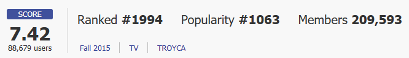
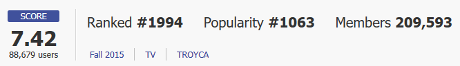

애니메이션 2015 23분•12부작 - 15세 관람가
[MyAnimeList] 평점 훗카이도 아사히카와시, 고등학생 '타테와키 쇼타로'는 어떤 일을 계기로 '뼈'를 매우 좋아하는 양가의 아가씨, '쿠죠 사쿠라코'와 교류를 가지게 된다. 그 후 여러가지 살인사건들과 조우하게 되어 검사관으로서의 재능을 가진 사쿠라코와 함께 추리를 하게 되는데........ OTT 라프텔 왓챠 웨이브
 

라프텔
왓챠
웨이브